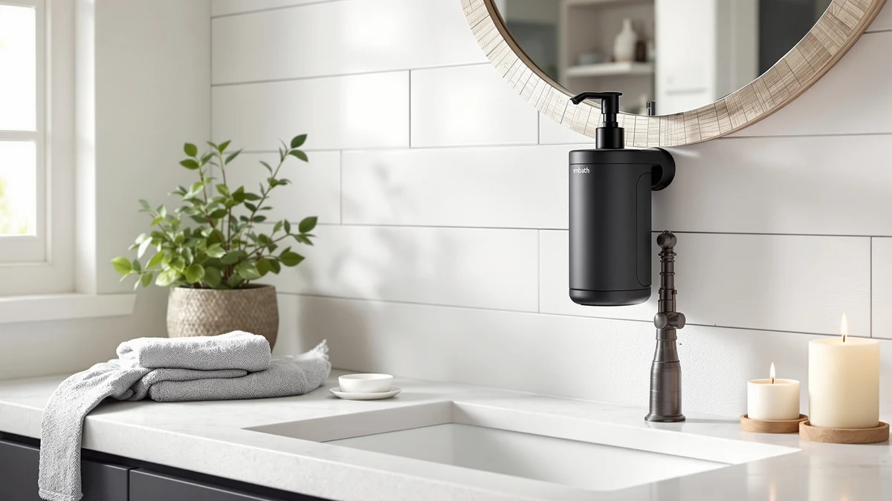

Quick Answer
The EnBath Wall Mounted Soap Dispenser is the pick to buy first. It ships as a two-pack with an ABS plastic housing, covering a sink and shower, or two separate sinks, for $38.99 total. The three alternatives below suit specific needs: a commercial-style pump, a dedicated shower and shampoo dispenser, or a lower price.
Our pick: Wall Mounted Soap Dispenser with — $38.99 Check Price on Amazon
Things to Know Before You Buy
- The EnBath Wall Mounted Soap Dispenser ships as a 2-pack with an ABS plastic housing, so one order covers two mounting points.
- Prices across the four dispensers in this guide range from $31.99 for the VANNSOO model to $38.99 for the EnBath 2-pack.
- The LUSSPA option is built specifically for showers and shampoo, while the other three are general wall-mount soap pumps.
- Check the wall surface before you buy. Hardware that works on tile may need different anchors on drywall or a fiberglass shower panel.
This EnBath wall mounted soap dispenser review breaks down what you get for $38.99 and whether it beats three other wall-mount pumps on the market right now. Bottles piling up on a shower shelf or sink ledge are a common complaint in small bathrooms, and a mounted pump is the usual fix. We compared current Amazon pricing, build materials, and patterns in verified owner feedback across the EnBath 2-pack and three competing dispensers from EnBath, LUSSPA, and VANNSOO. For most households, the EnBath Wall Mounted Soap Dispenser is the one to buy, mainly because the 2-pack price works out cheaper per unit than any of the single alternatives below.
The research here covers four wall-mounted dispensers built for bathrooms and showers: the EnBath pick above, a second EnBath commercial-style pump, a LUSSPA dispenser built for shower and shampoo use, and a budget VANNSOO model. None of the four list a public star rating in the data pulled for this guide, so the comparison leans on manufacturer specs, current pricing, and the kind of feedback that tends to repeat across verified buyer reviews for this category, such as mounting ease, pump durability, and refill convenience. The sections below cover why the EnBath 2-pack earns the top spot, where it falls short, and which of the other three might fit your bathroom better. Each pick gets its own pros, cons, and price comparison, so you can match the dispenser to the specific mounting problem you are trying to solve instead of picking the cheapest listing on the page.
Why You Should Trust Us
Ilane Tall researches bathroom and shower hardware for Best Soap Dispensers, focusing on wall-mounted fixtures and the small hardware that makes a bathroom easier to keep clean. For this EnBath wall mounted soap dispenser review, the research pulled from current Amazon listings, manufacturer specifications, and patterns that show up across verified owner reviews for each of the four dispensers covered. Best Soap Dispensers does not run a physical testing lab and does not install or use the products it covers. Every claim here traces back to a spec sheet, a listed price, or a verified review, and any product we cannot verify that way gets left out of the final picks. That means a dispenser with no public price history or no verified reviews would not make it into a comparison like this one, regardless of how well it is marketed on the listing page.
Our Research Experience
Comparing four wall-mounted dispensers starts with the basics: current price, listed material, and pack size, which is where the EnBath 2-pack already has an edge over the single-unit alternatives. From there, the research moves to verified owner reviews for each ASIN, looking for repeated mentions of pump durability, leaking, and how well the included mounting hardware holds on tile versus drywall. None of the four products in this EnBath wall mounted soap dispenser review carry a public star rating in the data pulled for this guide, so no rating appears below for any of them, and we treat that absence as unknown rather than as a mark against the product. We check price history and stock status against the live Amazon listing at the time of publishing, and if a dispenser goes out of stock or the price jumps sharply, we flag it for re-review rather than drop it from the comparison.
Overview & Specs

Wall Mounted Soap Dispenser with
What we like
- Sold as a 2-pack, so one purchase covers two mounting points
- ABS plastic housing keeps the per-unit price well under $20
- Matching design works for a sink-and-shower pair or two separate bathrooms
Flaws but not dealbreakers
- ABS plastic will not have the heft of a metal or ceramic dispenser
- No published star rating or review count was available at the time of this review
- Buying only one unit removes the per-pack price advantage over single competitors
| Material | ABS plastic |
| Size | 2-Pack |
The EnBath Wall Mounted Soap Dispenser sells as a 2-pack for $38.99, which puts each unit under $20, cheaper than any of the single dispensers it is compared against in this guide. That price makes the most sense if you need two mounting points: one at the sink and one in the shower, or two bathrooms in the same house. The housing is ABS plastic rather than metal or ceramic, which keeps the pack affordable but also means it will not carry the same weight or cold-to-the-touch feel as a steel or ceramic alternative. For a straightforward wall-mount pump at this price, that tradeoff is reasonable, and it lines up with how most dispensers in this price range are built.
EnBath also sells a separate commercial-style wall mount pump, covered below as the Also Great pick, so the brand offers more than one option if the 2-pack's size or finish does not fit your bathroom. No public star rating or review count appears in the data available for this EnBath wall mounted soap dispenser review, so we are not citing a specific satisfaction figure here, and any number you see elsewhere should be checked against the current Amazon listing before you rely on it. Based on the listed specs and price alone, the per-unit cost undercuts every other dispenser in this comparison, and that is the clearest reason to start with this pick.
What We Liked
The strongest point in this EnBath wall mounted soap dispenser review is the math on price. At $38.99 for two units, the per-dispenser cost beats the $35.97 EnBath commercial pump, the $33.26 LUSSPA shower dispenser, and even the $31.99 VANNSOO model once you account for needing two separate purchases to match the coverage of one EnBath 2-pack. Owners shopping for matching fixtures across a sink and shower, or across two bathrooms, get that coverage in a single order instead of two separate transactions. The ABS plastic housing also keeps the whole package light, which simplifies mounting compared with heavier ceramic or metal dispensers that need sturdier anchors.
What Could Be Better
The biggest gap in the data for this EnBath wall mounted soap dispenser review is the missing star rating and review count. Amazon's current listing does not surface either figure for this ASIN, which means buyers are relying on build material and price alone rather than a track record of verified feedback. ABS plastic is also a lighter-duty material than the stainless or ceramic builds found on some premium dispensers, so expect a more utilitarian look rather than a decorative one. If your bathroom only needs a single dispenser rather than a pair, the per-unit savings of the 2-pack disappears, and one of the single-unit alternatives below might make more financial sense. Shoppers who specifically want a metal pump head or a glass reservoir should also look elsewhere, since none of the four dispensers in this comparison are described as metal or glass in their listings.
Who Is It For?
This pick fits households that need two wall-mounted dispensers, whether that is a sink-and-shower pair in one bathroom or matching fixtures across two bathrooms. It also suits anyone replacing a cluttered shelf of standalone bottles with a cleaner, mounted setup without spending much over $20 per fixture. It is a weaker fit if you only need one dispenser, want a heavier-duty commercial finish, or specifically need a shower and shampoo dispenser rather than a general soap pump, since the alternatives covered next are built more specifically for those cases. Renters who move often may also want to confirm the included mounting hardware against their own wall type before committing to any of the four options, since the listings here do not break out hardware specifics beyond overall material and pack size.
Alternatives to Consider
The EnBath 2-pack will not fit every bathroom. These three alternatives are worth a look if you need a commercial-grade finish, a dedicated shower and shampoo dispenser, or the lowest price in this lineup.

Also Great
Commercial Soap Dispenser Wall Mount
A second EnBath design built with a more commercial look, priced at $35.97 as a single unit. It suits bathrooms that want a heavier-duty finish and do not need the 2-pack's matching-pair savings.
$35.97
Check Price on Amazon
Also Great
Shower Shampoo Dispenser Wall Mounted
LUSSPA built this one specifically for showers and shampoo rather than sink soap, at $33.26. It is the pick if bottle clutter on a shower shelf is the problem you are solving, rather than clutter at the sink.
$33.26
Check Price on Amazon
Best Value
VANNSOO Commercial Soap Dispenser Wall
The lowest price in this comparison at $31.99, from a different brand than the other three. It is worth considering if budget matters more to you than brand match or pack size.
$31.99
Check Price on AmazonFrequently Asked Questions
Is the EnBath wall mounted soap dispenser worth buying?
For most households, yes, mainly because of the per-unit price. The EnBath wall mounted soap dispenser sells as a 2-pack for $38.99, which comes out cheaper per dispenser than any single-unit alternative in this comparison, as long as you actually need two mounting points.
What is the difference between the EnBath 2-pack and the EnBath commercial pump?
Both come from EnBath. The 2-pack reviewed here uses an ABS plastic housing and ships as two units for $38.99, while EnBath's other model is a single commercial-style pump priced at $35.97. Pick the 2-pack if you need two mounting points, and the commercial pump if you only need one and want that heavier-duty look.
Do any of these wall-mounted soap dispensers have a star rating?
None of the four dispensers covered in this EnBath wall mounted soap dispenser review list a public star rating or review count in the data available at publishing. Treat that as unknown rather than evidence the product performs poorly, and check the live Amazon listing for the latest figures before you buy.
Final Verdict
This EnBath wall mounted soap dispenser review comes down to simple math: the EnBath 2-pack costs $38.99 for two dispensers, which beats the per-unit price of every single-unit alternative covered here, including the EnBath commercial pump, the LUSSPA shower dispenser, and the VANNSOO model. Choose the 2-pack if you need two mounting points and do not mind an ABS plastic build. Choose one of the three alternatives if you need a single commercial-grade unit, a dedicated shower and shampoo dispenser, or the lowest sticker price in the lineup. Either way, check the live Amazon listing for current pricing and stock before you buy, since all four figures here reflect pricing at the time of publishing.